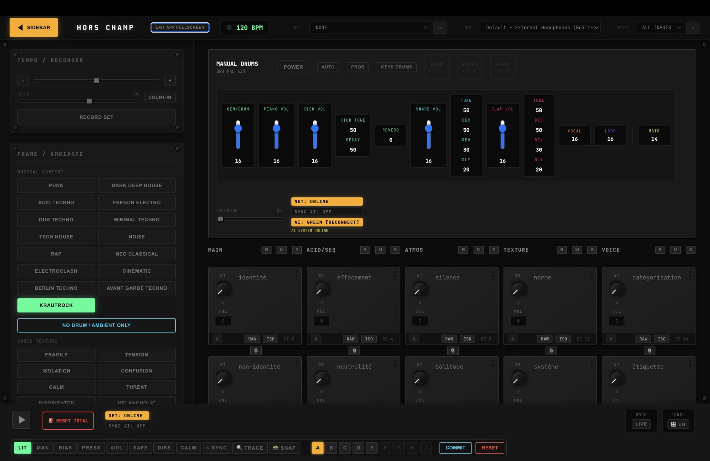

hors champ est une interface sonore expérimentale qui transforme des concepts, mots et états perceptifs en matière musicale.
Ni DAW traditionnel, ni simple générateur, l'application agit comme une machine d'interprétation conceptuelle où chaque module devient un geste, chaque mot devient une texture.
Navigation entre banques de concepts, manipulation d'intensités, activation de modes cognitifs et construction du prompt en temps réel via une trace DOS.

Le projet est actuellement en développement actif. Je cherche un centre d'artiste ou un espace de recherche où je pourrais développer et présenter ce travail.
Exploration des systèmes génératifs, traduction langage-son, et interfaces conceptuelles pour la performance live.
Espace pour développer l'interface, créer du contenu visuel, et présenter le travail dans un contexte de recherche-création.
Développement d'une approche performative unique explorant la machine comme interprète et co-créateur.
Chaque module représente une dimension de l'interface conceptuelle, permettant de sculpter le son à travers le langage et les états perceptifs.
Cellules représentant des concepts (identité, silence, effacement…) ou mots libres qui influencent directement la génération sonore.
Contexte musical global : minimal, techno, dub, noise, ambient, deep techno…
Modulateur émotionnel : tension, fragile, isolation, confusion, calme…
Dépouille la coloration stylistique et révèle une version plus sèche, abstraite ou instable du preset.
Synchronisation BPM, enregistrement cyclique, superposition de couches génératives et live input.
Visualisation du prompt et des décisions sonores sous forme de log rétro-informatique.
Centres d'artistes, espaces de recherche, collaborateurs : discutons de ce projet expérimental.
Me contacter